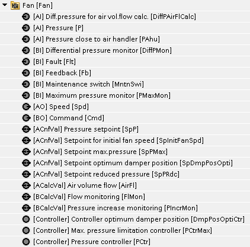
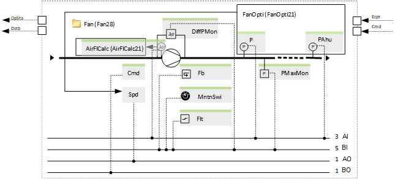
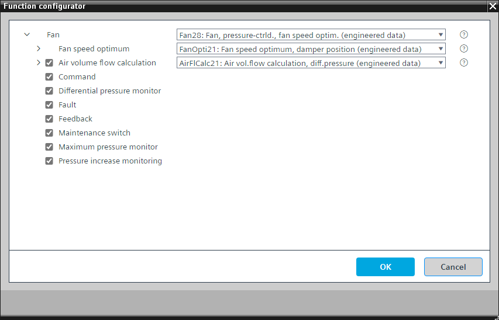

[Fan28] 风扇、压力控制、风扇优化
Program block, name / node subtype: [Fan28] Fan, pressure-controlled, fan speed optimization
Library hierarchy: Ventilation and air conditioning equipment
Family: Fan
项目树 | 图表 |
|---|---|
 |  |
Configurator


程序块存储在没有 I/Os. 的库中 使用auto-create and auto-connect函数创建 I/Os 和 /or 将它们连接到接口块，例如 R_A、CMD_B。或者，从包含库中预定义 I/Os 的文件夹中取出 I/Os，并从工厂中取出 /or，并将它们连接到接口块。
控制变速风扇并执行压力控制。
姓名 | 描述 | 类型 | 报警/通知类 | 趋势/类型 | |
|---|---|---|---|---|---|
Spd | Speed | AO：模拟输出 | No | 是的，2 | |
FanOpti | Fan speed optimum | [FanOpti21] Fan speed optimization, direct fan speed control | N/A | N/A | |
姓名 | 描述 | 类型 | 报警/通知类 | 趋势/类型 | |
|---|---|---|---|---|---|
Cmd | Command | BO：二进制输出 | No | 是的，4 | |
Flt | Fault | BI：二进制输入 | Yes, 4/5 | No | |
MntnSwi | Maintenance switch | BI：二进制输入 | 是的，5 | No | |
DiffPMon | Differential pressure monitor | BI：二进制输入 | 是的，4 | No | |
Fb | Feedback | BI：二进制输入 | 是的，4 | No | |
PIncrMon | Pressure increase monitoring | BCalcVal: Binary calculated value | 是的，4 | No | |
AirFlCalc | Air volume flow calculation | [AirFlCalc21] Air volume flow calculation, as a function of differential pressure | N/A | N/A | |
PMaxMon | Maximum pressure monitor | BI：二进制输入 | 是的，4 | No | |
如果压力在定义的时间段内没有增加，则会生成监控事件（如果存在此可选元素）。